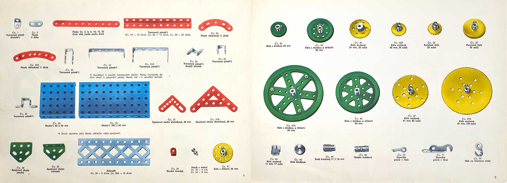

Readings & Discussions
Reading Discussion 1 - Tools Standards and Poetics
For the first reading of the semester we were asked to read two different articles one called 'The Programmed Designer' published on Eye Magazine by John-Patrick Hartnett a Designer and Lecturer in London and the another called 'Microsoft and the Yeoman Coders' published on Jacobin by Gavin Mueller an editor at Jacobin in Washington, DC. The task included writing a written response answering two questions:
The first being, The two articles both articulate an ethical problem related to their topic (industry-standard design tools & the current scale and state of open-source tech). Define what you consider to be the authors positions in relation to these two topics and how they overlap. What connections can you draw between these two articles? Do they prescribe solutions that are pertinent to each other?
The second being, Aside from the mastery of certain digital tools and programs, what skills do you see as integral to your graphic design practice?
My Response
In the article The Programmed Designer by John-Patrick Hartnett, the author highlights graphic designer's dependence on tools and softwares such as apple and adobe. He mentions how despite their costly subscriptions, designers always seems to rely on the tools and softwares they have absolutely no control of and know nothing about the technology that supports the machines they use on a daily basis.In the article Microsoft and the Yeoman Coders by Gavin Mueller, the author focuses on computer coding softwares and the purchase of GitHub by Microsoft. He also stresses on the destruction of open-source softwares which he believes are very valuable and have 'given a lot of mobility to developers as a class' (Mueller, 2018). Both articles focus on how to avoid large corporations such as Microsoft, Apple, and Adobe that seem to be capitalizing the industry. They also both advise the readers to utilize more open-source networks. Although the solutions they both prescribe are similar, The Programmed Designer encourages its readers to become more 'independent and heterogenous' (Hartnett, 2017), and Microsoft and the Yeoman Coders urge their readers to work more democratically.
As a graphic designers the skills I believe are necessary for my practice are mainly around the idea of being able to be different and come up with new and innovative ideas as well as being able to occasionally stray away from softwares such as adobe and produce physical work which will further enhance both the logical and creative sides in our brains.
Reading Discussion 2 - Olia Lialina - 'Turing Complete User' & Laurel Schwulst - 'My website is a shifting house next to a river of knowledge. What could yours be?'
The second reading discussion also consisted of two articles; 'Turing Complete User' & 'My website is a shifting house next to a river of knowledge. What could yours be?' , both on being an independent user on the web. We had to answer two questions:
The first was What do you think of Lialina’s definition of the universal user? Do you think it is a useful category for understanding Schwulst’s argument advocating for individual websites over platforms? Explain why and provide at least 1 example.
The second was What kind of computer user are you? Draw on concepts from Lialina’s text, and integrate a quotation in your answer. Make use of metaphor, if you can, to describe your experience online (à la Schwulst).
My Responses
1. What do you think of Lialina’s definition of the universal user? Do you think it is a useful category for understanding Schwulst’s argument advocating for individual websites over platforms? Explain why and provide at least 1 example.
I believe that both authors are trying to convey the same message of being independent 'user' on the web rather than a dependent one. Lialina describes universal users as being independent and doing things on their own. This in a way relates to Shwulst's argument about having your own website that you shape and mold into what ever you want it to be rather than be dependent on a larger platform. In Turing Complete User, Lialina says "I mean are users who have the ability to achieve their goals regardless of the primary purpose of an application or device" which basically means that users would/should be able to achieve their personal goals at anytime and not be limited by the platform or application they are utilizing. In My Website is a Shifting House Next to a River of Knowledge. What could yours be?, Shwulst says "they allow the author to create not only works (the “objects”) but also the world (the rooms, the arrangement of rooms, the architecture!). " this supports Lialina's claim of being independent as Shwulst explains that a website can be anything an artist desires it to be and not a restrictive platform that has specific usages.
2. What kind of computer user are you? Draw on concepts from Lialina’s text, and integrate a quotation in your answer. Make use of metaphor, if you can, to describe your experience online (à la Schwulst).
I believe I am a Universal User; "not a super user, not half a hacker." I am not an expert and I visualize technology as a means of helping other achieve their goals. I mostly use my computer for school work and entertainment. I frequently browse the web for things I want to buy or want to gain more knowledge on but thats mostly it. Other than that, I have recently started to use apps such as Git Hub and Visual Studio Code to complete course work however, I believe that I will be using them more often even after the end of the course.
Reading Discussion 3 - Code, Letters, Logic, and Play
In this discussion, we were asked to read an article as well as watch a video on math, logic, and play. The article 'The Importance of Play' was by Peter Biľak and the video 'Math, Logic, Design?' was of Just van Rossum. We had to answer one of three prompts in a minimum of 200 words.
The first being; A key part to generative design and code is pattern and routine. Akin to a chess player, marking each move down, and keeping a trace of your decisions can prove useful for your own process and future making. As a designer, to know that there might be a variety of possibilities to a given situation, can aid our ways of observing by using tools in novel ways. In one series of work, Van Rossum looks to fundamentals of waveforms as a departure point and reference point for connecting an interface to affecting the parameters of a letterform. If the letters explode, so too would the speakers. Find 1 unique example of a pattern in nature, that appears to be programmatic. Post a visual of this pattern and describe how it is programmatic in nature.
The second being; Van Rossum explores the visual, formal, and structural logic of older programmatic-looking artworks (pre-computer) in order to remake in current day languages (Python) and tools (Drawbot), because why not? By rethinking these static artworks into motion that loops, JVR re-observes through the lens of new tools and languages. The artwork takes on a new life, and can delight in different ways. Find 1 example of design that you find fascinating and are confused as to how it was made. Post a visual. Describe how you think it was made. Then find out how it actually was, written in point form. Make sure to cite!
The third being; Many of the tools and languages mentioned by Just van Rossum in the talk are open-source in nature. Find 3 other unique languages/software/tools that are open source. Describe how you could apply open source principles to your design process.
My Response
1. Find 1 unique example of a pattern in nature, that appears to be programmatic. Post a visual of this pattern and describe how it is programmatic in nature.
An example of a pattern in nature that appears to be programmatic are fractals such as trees. Fractals are patterns in nature that are repeated over and over again at different scales. Although fractals are found every where in nature such as flowers, river deltas, and growth spirals, trees are the most common place in nature to find them and they are accessible by everyone. Branches come in different widths, sizes, textures, and colors. Similar to patterns in digital design, tree branching can be manipulated using weights and and cuts. Pruning, is main method of manipulating tree growth and branching. It is the reduction of parts of plants that are not required to grow which can alter its appearance.
When a sprout comes out of the ground, it splits into different branches. Then, each branch splits into another branch and so on. A way tree patterns appear to be programmatic is through their similarities. When you look at a tree that has an infinite number of branches you ultimately see something known as self-similarity which means that they all look somewhat the same however at a different scale. You would think it was made on purpose that they all look the same or somewhat similar yet, it is the result of nature. The term programmatic means resembling a program or relating to a program and a program is a series of measures with a particular aim. In my opinion, branches do appear to be programmatic as they seem to follow a specific algorithm in their growth and they way they look therefore relating to a program.

Reading Discussion 4 - In Free Fall, Hito Steyerl
In this discussion we were asked to read an article called "In Free Fall: A Thought Experiment on Vertical Perspective" by Hito Steyerl. An article on surveillance and technology. We were then asked to respond to one of three prompts in 200 words and reply to two of our peers.
The first one being: A major theme that runs throughout Steyerl’s essay is that of surveillance. In your own words, define surveillance and discuss how the notion of a “vertical” or aerial perspective lends itself to a culture of surveillance according to Steyerl’s thought experiment.
The second one being: What do you make of Steyerl’s point that linear perspective privileges the individual while also lessening one’s humanity by rendering that individual view according to scientific principles? Is it possible to maintain both a humanist and technological perspective?
The third one being: Steyerl points to how aerial imagery and 3D-generated environments have altered the way we conceive of time and space. Because what we see now regularly incorporates views that can only be generated by machines, more specifically computers, she argues that we live in a society of “hyperreal representations—not of space as it is, but of space as we can make it—for better or worse” (26). What kinds of social or cultural consequences do you think Steyerl is alluding to when she says “for better or worse”? Provide an example.
My Response
A major theme that runs throughout Steyerl’s essay is that of surveillance. In your own words, define surveillance and discuss how the notion of a “vertical” or aerial perspective lends itself to a culture of surveillance according to Steyerl’s thought experiment.
Surveillance is the monitoring or watching over someone or something from multiple perspectives like aerial, linear, and others as mentioned in the reading. Surveillance can come in different forms such as telephone, aerial, computer, and postal and it is mainly used to maintain safety and protect one's self. In today's world multiple apps and technologies such as have been introduced to us that promote surveillance such as Nextdoor, Ring, Alfred, Reolink, etc. In the article, Steyerl talks about the history of perspectives and how they have developed over the years in technologies such as google maps, drones, and satellite views. Nowadays data from satellite and aerial views has become so typical because of the numerous apps like google earth and google maps that have made it so accessible for us. In addition technologies like drones which have been trending for a long time are so easy to buy and use which is why people have just adapted them into their daily lives. In my opinion, it is quite overwhelming and can also be creepy and as Steyerl said "new technologies have enabled the detached observant gaze to become ever more inclusive and all-knowing to the point of becoming massively intrusive" (Steyerl, 2011). However, it is the future and it is only going to get worse so we have to accept it and incorporate it into our lives.